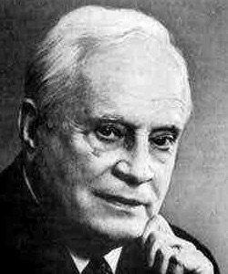

Rolf Nevanlinna (22 octobre 1895 [Joensuu] - 28 mai 1980 [Helsinki])
Rolf Nevanlinna est un mathématicien finlandais, qui est aussi connu pour l'intérêt qu'il porta à développer l'enseignement de l'informatique à l'université. Il est né le 22 octobre 1895 à Joensuu, une petite ville de Finlande, alors province russe. À sa naissance, le nom de famille de Rolf était Neovius, mais, par patriotisme, la famille décida en 1906 de changer ce patronyme aux accents suédois en Nevanlinna. La famille de Nevanlinna est une famille de grands scientifiques : son grand-père, un général de l'armée du tsar, fut un précurseur des programmes de recherche d'extra-terrestres ; son père était docteur en physique ; un des cousins de son père était le grand mathématicien Ernst Lindelöf ; son frère ainé Frithiof Nevanlinna devint lui aussi mathématicien et fut son proche collaborateur.
Rolf Nevanlinna étudia au lycée d'Helsinki, où c'est son propre père qui lui enseigna les mathématiques et la physique. Cela dit, Nevanlinna était alors plus attiré par les enseignements classiques (latin, grec) ; il était aussi déjà un violoniste accompli et parlait plusieurs langues étrangères. Il fallut toute la force de conviction de Ernst Lindelöf, qui devint son mentor, pour le persuader d'embrasser des études de mathématiques. C'est ce qu'il fit en entrant à l'université d'Helsinki en 1913.
Ses études universitaires sont perturbées par la Première Guerre Mondiale. Il évite de justesse d'être enrôlé dans l'armée russe. En décembre 1917, suite à la Révolution russe, la Finlande déclare son indépendance. Une guerre civile oppose au printemps suivant les partisans de la Russie aux autres, soutenus par l'Allemagne impériale. Nevanlinna fait partie de ces derniers, mais il ne participe pas aux actions armées. Il soutient finalement sa thèse le 2 juin 1919, le jour même où il épouse sa cousine Mary Selin. Il eut 4 enfants avec elle, avant qu'ils ne divorcent vers 1950 et que Rolf ne se remarie avec Sinikka Kallio en 1958. De cette seconde union naquit encore un enfant.
Au sortir de la guerre, il n'y a pas de postes universitaires en Finlande. Nevanlinna se contente d'un poste de professeur de lycée, avant de devenir assistant à l'université d'Helsinki en 1923, puis professeur en 1926 toujours à l'université d'Helsinki. C'est seulement à ce moment-là qu'il abandonne son poste dans le secondaire. Pourtant, c'est pendant ces années-là, où sa charge de travail est très élevée, qu'il écrit les plus belles pages de sa recherche. Il est ainsi, avec son frère, l'un des principaux artisans de la théorie des fonctions méromorphes. Il s'intéresse particulièrement à la distribution des zéros de ces fonctions, et il est l'auteur de ce que l'on appelle maintenant la "théorie de Nevanlinna".
Rolf Nevanlinna garda son poste à Helsinki jusqu'à la retraite. Il fut notamment le recteur de cette université de 1941 à 1945. Cela ne l'empêcha nullement de beaucoup voyager, notamment en Allemagne (à Göttingen).
La Seconde Guerre Mondiale va réveiller les convictions politiques de Nevanlinna. À nouveau, la Finlande est déchirée entre l'URSS et l'Allemagne. Comme la plupart des bourgeois de son pays, Nevanlinna (dont la mère est de plus d'origine allemande), est très favorable à l'Allemagne qu'il voit comme un rempart au communisme. Il est de plus ami avec le général SS Félix Steiner. Par ailleurs, la Finlande, dont la communauté juive était réduite, n'avait pas une tradition d'anti-sémitisme rampant. Ainsi, si elle entra en guerre aux côtés de l'Allemagne contre l'URSS (et non contre les autres pays opposés à l'Allemagne) il s'agissait juste pour elle d'un problème de frontières et d'indépendance. C'est Nevanlinna qui fut chargé de la direction du comité chargé de recruter des volontaires pour la constitution d'un bataillon finlandais au sein de l'armée SS. Si ce bataillon eut une durée de vie très courte, Nevanlinna ne cacha jamais pendant la guerre ses sympathies nazies, et n'exprima aucun regret par la suite.
Après la guerre, des pressions politiques le poussèrent à abandonner son poste de recteur à l'université d'Helsinki. La communauté mathématique ne lui tint pas rigueur de son attitude pendant la guerre. Il eut une chaire à Zurich en 1946, et fut élu président de l'Union Mathématique Internationale de 1959 à 1963. Il fut également l'un des artisans du rapprochement entre mathématiciens de l'Est et de l'Ouest au cours de la guerre froide.
Peu après sa mort, en 1980, l'Union Mathématique Internationale créa en 1982 le prix Rolf Nevanlinna, décerné tous les 4 ans, qui vise à récompenser un jeune mathématicien (moins de 40 ans) pour ses contributions exceptionnelles aux aspects mathématiques de l'informatique. Le nom de Nevanlinna était naturel pour une telle récompense, car c'est lui qui organisa le projet d'équipement en ordinateurs des universités finlandaises.